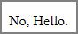

一、kendo Inline Template
<!DOCTYPE html> <html> <head> <meta charset="utf-8" /> <link href="https://kendo.cdn.telerik.com/2020.1.406/styles/kendo.common.min.css" rel="stylesheet" /> <link href="https://kendo.cdn.telerik.com/2020.1.406/styles/kendo.default.min.css" rel="stylesheet" /> <script src="https://code.jquery.com/jquery-1.12.4.min.js"></script> <script src="https://kendo.cdn.telerik.com/2020.1.406/js/kendo.all.min.js"></script> </head> <body> <div id="example"></div> <script type="text/javascript"> var templateString = '<h1>#:myName#</h1>'; //一段 kendo template script var template = kendo.template(templateString); //將該 kendo template script 轉換成 kendo template function $("#example").html(template({ myName: "Hello" })); //render 該 template </script> </body> </html>
執行結果
說明：
1、先宣告一段 kendo template script。
2、將該 kendo template script 轉換成 kendo template function。
3、執行 kendo.template 方法，去 render 該 template。
4、當執行 kendo template function 時，因為 kendo template script 所接受的 parameter 型式是 json object，所以其輸入的 argument 型式也必須是 json object；
如果所接受的 parameter 型式是 array，所以其輸入的 argument 型式也必須是 array。
二、kendo External Template
<!DOCTYPE html> <html> <head> <meta charset="utf-8" /> <link href="https://kendo.cdn.telerik.com/2020.1.406/styles/kendo.common.min.css" rel="stylesheet" /> <link href="https://kendo.cdn.telerik.com/2020.1.406/styles/kendo.default.min.css" rel="stylesheet" /> <script src="https://code.jquery.com/jquery-1.12.4.min.js"></script> <script src="https://kendo.cdn.telerik.com/2020.1.406/js/kendo.all.min.js"></script> </head> <body> <div id="example"></div> <script> // Create some dummy data. var data = ["Todd.Holland", "Steve.Anglin", "Burke.Ballmer"]; // Use a custom function inside the template. Must be defined in the global JavaScript scope. function myCustomFunction(str) { return str.replace(".", " "); } </script> <script id="kendoScript" type="text/x-kendo-template"> <ul> # for (var i = 0; i < data.length; i++) { # <li>#= myCustomFunction(data[i]) #</li> # } # </ul> </script> <script type="text/javascript"> //取其 kendo script，use .html() 方法可以確保該 kendoScript 在 render 後， //可以資料不失真地全取回來，不然 use .text() 方法也可以的。 //將該 kendo template script 轉換成 kendo template function。 var template = kendo.template($("#kendoScript").html()); var result = template(data); //Execute the template $("#example").html(result); //Append the result </script> </body> </html>
執行結果
說明：
1、取其 kendo script，使用 .html() 方法可以確保該 kendoScript 在 render 後，可以資料不失真地全取回來，不然用 .text() 方法也可以的。
2、將該 kendo template script 轉換成 kendo template function。
3、執行 kendo.template 方法，去 render 該 template。
4、type="text/x-kendo-template" 的標示為非必要的。
三、使用 kendo hash syntax (Kendo UI template syntax) 有三種型式
1、Render values as HTML: #= #.
2、Use HTML encoding to display values: #: #.
3、Execute arbitrary JavaScript code: # if (true) { # ... non-script content here ... # } #.
<!DOCTYPE html> <html> <head> <meta charset="utf-8" /> <link href="https://kendo.cdn.telerik.com/2020.1.406/styles/kendo.common.min.css" rel="stylesheet" /> <link href="https://kendo.cdn.telerik.com/2020.1.406/styles/kendo.default.min.css" rel="stylesheet" /> <script src="https://code.jquery.com/jquery-1.12.4.min.js"></script> <script src="https://kendo.cdn.telerik.com/2020.1.406/js/kendo.all.min.js"></script> </head> <body> <div id="example"></div> <script id="kendoScript" type="text/x-kendo-template"> # if(mydata === true) { # <p>Yes, #=mydata#.</p> # }else{ # <p>No, #=mydata#.</p> # } # </script> <script type="text/javascript"> var template = kendo.template($("#kendoScript").html()); var result = template({ mydata: "Hello" }); $("#example").html(result); </script> </body> </html>
執行結果

四、kendo hash syntax 允許執行 js 程式碼
<!DOCTYPE html> <html> <head> <meta charset="utf-8" /> <link href="https://kendo.cdn.telerik.com/2020.1.406/styles/kendo.common.min.css" rel="stylesheet" /> <link href="https://kendo.cdn.telerik.com/2020.1.406/styles/kendo.default.min.css" rel="stylesheet" /> <script src="https://code.jquery.com/jquery-1.12.4.min.js"></script> <script src="https://kendo.cdn.telerik.com/2020.1.406/js/kendo.all.min.js"></script> </head> <body> <div id="example"></div> <script id="kendoScript" type="text/x-kendo-template"> # var myString = "hello world"; # <p> #= myString # </p> </script> <script type="text/javascript"> var template = kendo.template($("#kendoScript").html()); var result = template({}); $("#example").html(result); </script> </body> </html>
執行結果

kendo hash syntax 允許變數。
<!DOCTYPE html> <html> <head> <meta charset="utf-8" /> <link href="https://kendo.cdn.telerik.com/2020.1.406/styles/kendo.common.min.css" rel="stylesheet" /> <link href="https://kendo.cdn.telerik.com/2020.1.406/styles/kendo.default.min.css" rel="stylesheet" /> <script src="https://code.jquery.com/jquery-1.12.4.min.js"></script> <script src="https://kendo.cdn.telerik.com/2020.1.406/js/kendo.all.min.js"></script> </head> <body> <div id="example"></div> <script id="kendoScript" type="text/x-kendo-template"> # var myString = "hello world"; # <!-- #alert(myString)# --> </script> <script type="text/javascript"> var template = kendo.template($("#kendoScript").html()); var result = template({}); $("#example").html(result); </script> </body> </html>
執行結果
即使藏在 html 註解裡，kendo hash syntax 也編譯使其程式碼被執行。
五、轉譯字元
<!DOCTYPE html> <html> <head> <meta charset="utf-8" /> <link href="https://kendo.cdn.telerik.com/2020.1.406/styles/kendo.common.min.css" rel="stylesheet" /> <link href="https://kendo.cdn.telerik.com/2020.1.406/styles/kendo.default.min.css" rel="stylesheet" /> <script src="https://code.jquery.com/jquery-1.12.4.min.js"></script> <script src="https://kendo.cdn.telerik.com/2020.1.406/js/kendo.all.min.js"></script> </head> <body> <div id="example"></div> <script type="text/javascript"> var templateString = '\\#'; var template = kendo.template(templateString); $("#example").html(template({})); </script> </body> </html>
執行結果
說明：
在 kendo template script 轉換成 kendo template function 時，
如果該「#」符號不是用於 kendo hash syntax 的標示，
而單純只是要印出「#」符號，則 kendo template function 有提供轉譯字元的方法，
只要在「#」符號前面加上「\\」即可。
六、kendo.render 的使用
<!DOCTYPE html> <html> <head> <meta charset="utf-8" /> <link href="https://kendo.cdn.telerik.com/2020.1.406/styles/kendo.common.min.css" rel="stylesheet" /> <link href="https://kendo.cdn.telerik.com/2020.1.406/styles/kendo.default.min.css" rel="stylesheet" /> <script src="https://code.jquery.com/jquery-1.12.4.min.js"></script> <script src="https://kendo.cdn.telerik.com/2020.1.406/js/kendo.all.min.js"></script> </head> <body> <ul id="users"></ul> <script type="text/x-kendo-template" id="myTemplate"> #if(isAdmin){# <li>#: name # is Admin</li> #}else{# <li>#: name # is User</li> #}# </script> <script type="text/javascript"> var templateContent = $("#myTemplate").html(); var template = kendo.template(templateContent); //Create some dummy data var data = [ { name: "John", isAdmin: false }, { name: "Alex", isAdmin: true } ]; var result = kendo.render(template, data); //render the template $("#users").html(result); //append the result to the page </script> </body> </html>
執行結果
說明：
kendo.render() 用法為，迭代陣列裡的所有元素，代進 kendo template method，
有別於 kendo template function；kendo.render() 用來幫你省掉 for 迴圈去取出陣列裡的所有元素。
參考資料：